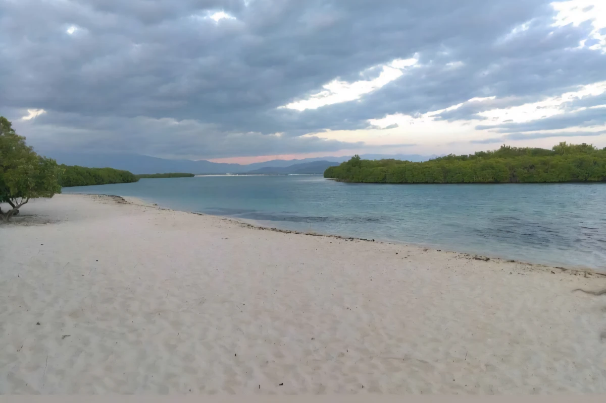

About Us
My name is Imanol Matos and this is Monte Rio Route, I am student from the province of Azua and I am the leader of Monte Rio Route. This project is inspired by my connection with nature and my love for discovering unique places. Monte Río Route is an invitation to explore and enjoy the beauty of the Beaches of Azua, the landscapes, and culture, blending adventure, photography, and a healthy lifestyle. Monte Rio Route consists of the beaches: "Monte Rio", "Uvitas","Blanca", and "El Barco".
How does it work?
We meet at the Central Park of the province, where our journey begins. From there, we provide comfortable and safe transportation to take you directly to the Monte Río Route, one of the most beautiful and relaxing destinations in the region. During the trip, we make sure that you enjoy every moment. We offer delicious food to keep you energized, a security guard to ensure your safety, and round-trip transportation so you can travel worry-free. The atmosphere is filled with music, creating a fun and lively environment for everyone. As part of the experience, each participant receives exclusive souvenir gifts to remember this adventure. Please click “Make a Trip” to enjoy a trip with us.